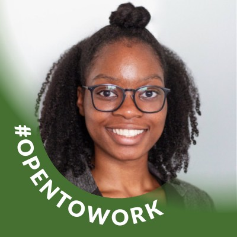

My Resume

Summary
I have experience in digital marketing, content creation, and project management, working with reputable brands such as Capital One Financial and Guinness. I have successfully executed media and influencer outreach campaigns, produced engaging and impactful digital content, and conducted industry analysis and trend reporting through cross-functional collaboration on both the brand and agency sides.
With a BA in Strategic Communications from Howard University, I have developed strong storytelling, content creation, and social media marketing skills that I have applied to my own small business endeavors and to the clients I work with as a digital marketing strategist.
Curiosity, collaboration and analytical thinking remain a through-line for my approach to work and have supported the success of many organizations where I've contributed to business growth. I am passionate about creating conversations around mental health, small business, sustainability, and personal finance, and seek to inspire and inform audiences through my work. What inspires you? Let's Chat
on LinkedIn!
Education
- Howard University | Bachelor of Arts - BA (2020)
- Major: Strategical, Legal, and Management Communications
- Minor: Business Administration
Work Experience
SeizeTuesday
Small Business Owner | July 2020 – Present
Operated a product-based in the retail e-commerce space, owning R&D, Sales, Customer Success, Etc
- Utilized A/B testing to assess visual media effectiveness and improve copy through search engine optimization (SEO) which decreased required ad spend by 30%
- Educated customers about the product’s value by highlighting benefits, leading to upselling 76% of face-to-face transactions
- Analyzed target audience shopping trends and identified an emerging promotional opportunity leading to a 27% increase in profits by diversifying the marketing channel mix to increase target audience engagement
Taylor
Asst. Account Executive | Jun 2020 – Oct 2021
A marketing agency driving creativity for enterprise clients like Capital One Financial, P&G, Guinness, and more.
- Collaborated with client’s student-card enterprise team, 10 influencer campaign partners, media members and in-house creative team to execute organized, on-strategy and timely digital marketing campaigns
- Led proactive and targeted media pitching that generated 18M+ earned media impressions from publications such as Bloomberg, Insider & CNBC for a campaign supporting First Generation college students’ financial goals
- Created a reporting framework to track target audience social media engagement across various promotional activities, which fueled insights in a daily business analysis e-mail newsletter shared with clients
Spotlight
General Manager / Production Director | Aug 2018 – May 2020
A PBS-affiliate sponsored organization training college students for careers in journalism.
- Identified student pain points to overcome objections while recruiting resulting in an 86% increase in membership
- Secured $5,000 in funding from the Howard University administration (from $0 previously) by fostering a relationship between key stakeholders at WHUT-TV (PBS), Howard University Athletics and Howard University Rankin Chapel
- Organized team logistics and scheduling for a 65+ member organization that educated early-career media communication students through hands-on experience by producing journalistic news packages and live studio productions
C-SPAN
Media Relations Intern | Sep 2019 – Dec 2019
A DC-based American cable and satellite television network broadcasting official US federal government proceedings.
- Developed, coordinated, and distributed tactical program activation elements, including robust 100+ contact media lists, visually engaging press materials and succinct message points that met business segment objectives
- Partnered with HR team members to recruit university students and local early-career job seekers at two (2) in-person local DC-area career fairs as a program ambassador
National Society of Collegiate Scholars
Marketing Intern | Aug 2018 – Dec 2018
A national non-profit academic honor society recruiting high-achieving college students, with ~300 active chapters in accredited colleges and universities across the United States.
- Resolved customer email and phone inquiries concerning programs, policies, services promotions and activities, utilizing creative problem-solving resulting in a 95% five-star customer service rating
- Onboarded, managed and updated new member data within Salesforce CRM software using data provided over the phone
- Introduced social media analytics measurement SOPs and automation software to streamline KPI measurement and reporting across social channels, which decreased time allocation by 12.5% across the team
Skills
- Adobe Suite - Acrobat, Premiere, Photoshop, Illustrator, Lightroom, After Effects
- Social Media Scheduling: Tailwind, Buffer, Hubspot
- Media Relations & Reporting: Critical Mention, Muckrack, Cision
- Meta (Instagram/Facebook) Ads
- Microsoft Office Suite - Word, Excel & PowerPoint
Awards & Certifications
- Google Ad Grants Marketing Challenge
- Hootsuite Platform Certification
- HubSpot Digital Advertising Certification (in-progress)
- Google Analytics (in-progress)
- Web Development Bootcamp (in-progress)
Work Eligibility
- Eligible to work in the U.S. with no restriction
Hobbies |
Contact Me